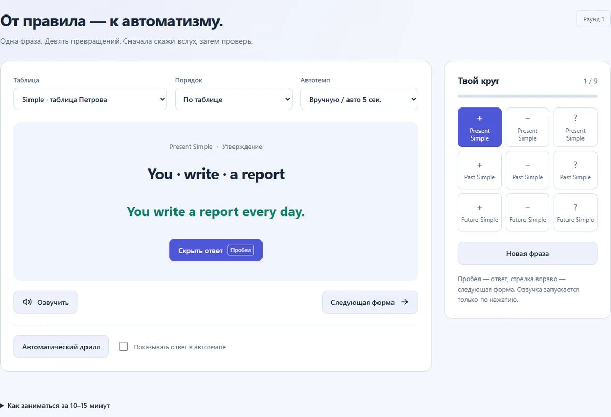
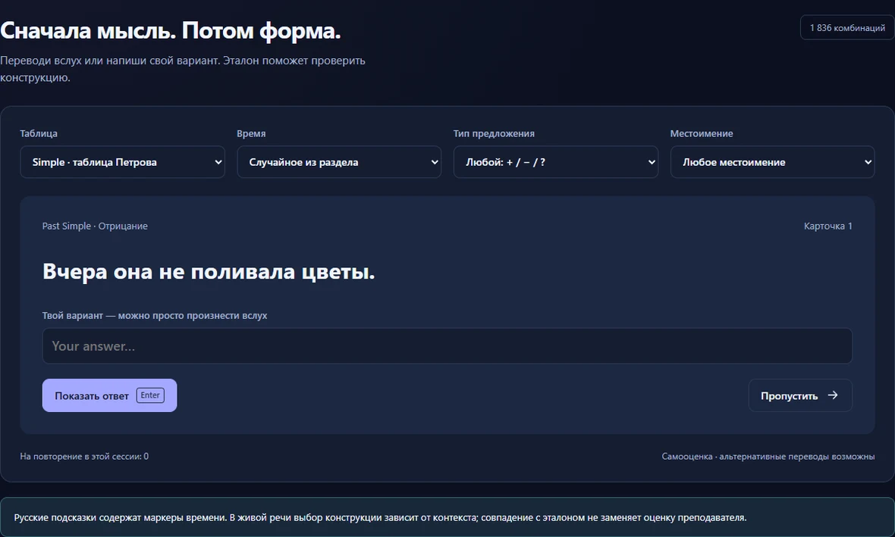
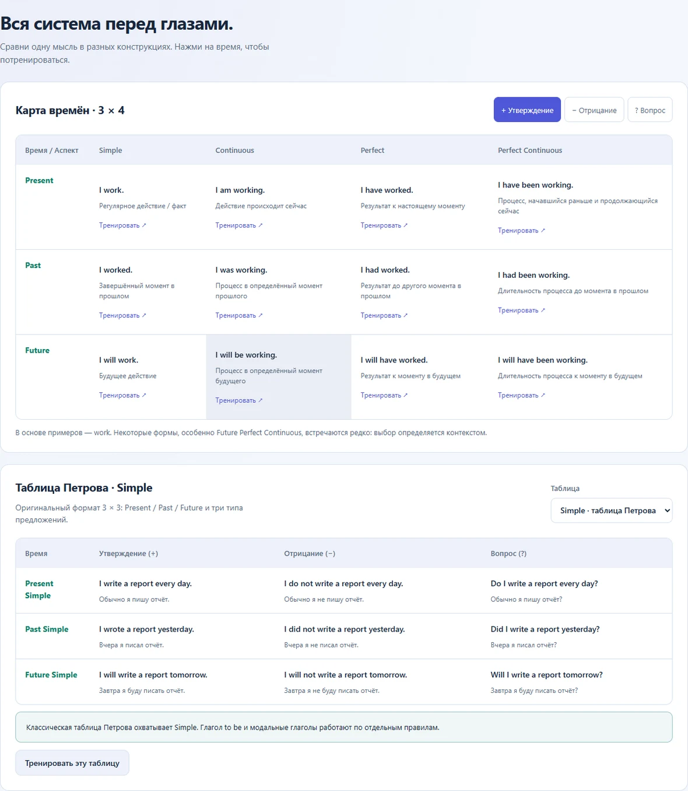
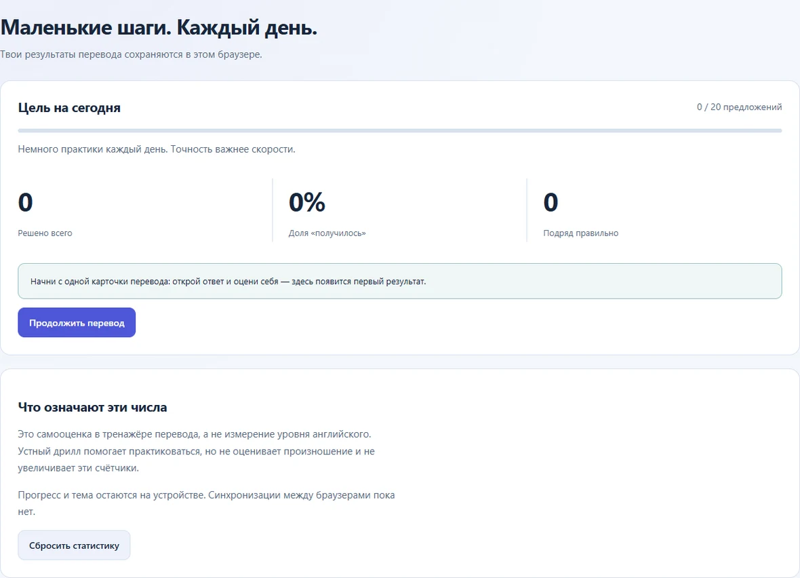

Сначала произнеси
Посмотри на задание и составь предложение вслух. В быстром дрилле ничего не нужно печатать.
She works every day.
Она работает каждый день.
Произнеси по-английски. Затем проверь себя.
She works every day.
Английские времена для тех, кто знает правила, но подбирает слова слишком долго.
Без регистрации. В своём темпе.
12 английских времён
+ − ? три формы фразы
A2–B1 если правила уже знакомы
Одна фраза проходит через разные времена и формы. Меняй конструкцию, сохраняя мысль.
Посмотри на задание и составь предложение вслух. В быстром дрилле ничего не нужно печатать.
She works every day.
Открой ответ. Проверь порядок слов, вспомогательный глагол и окончание.
Does she work every day?
Пройди девять форм одной группы или смешай все времена. Выбирай ручной режим или автотемп.
Did she work yesterday?
В переводе оцени свой ответ сам. Неудачные попытки можно повторить отдельно.
She will work tomorrow.
Сначала опора на таблицу. Потом перевод без готовой фразы. Результаты остаются в твоём браузере.




Реальные экраны TenseLab. Светлая и тёмная темы доступны в приложении.
Если ты знаком с основами английской грамматики и хочешь практиковать построение фраз. Начальная аудитория — A2–B1. Объяснения в интерфейсе на русском языке.
Начни с одного круга из девяти форм. Для более длинного занятия можно совместить быстрый дрилл, перевод и повторение ошибок. Темп выбираешь сам.
Ты сам сравниваешь свою фразу с ответом тренажёра и отмечаешь результат. Автоматической проверки речи и оценки произношения сейчас нет.
Нет. Можно сразу открыть упражнение. Результаты хранятся локально в браузере; между устройствами они не синхронизируются. Очистка данных сайта удалит сохранённый прогресс.
Да, после первой успешной загрузки приложения и готовности офлайн-кэша. Дождись надписи «Доступно без интернета». Для озвучки без сети нужен установленный голос, который поддерживает офлайн-работу.
Тренажёр даёт практику конкретных конструкций. Дополняй её аудированием, живыми диалогами и фразами в контексте. Самооценка в упражнениях не является оценкой общего уровня английского.